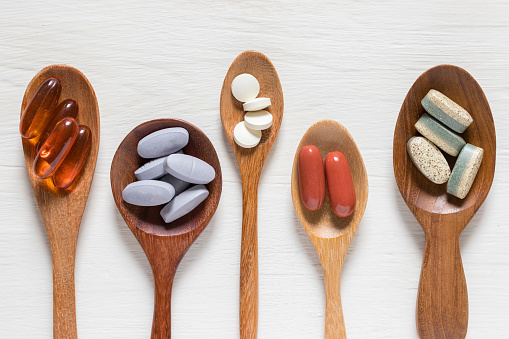

우리를 건강하게 만드는 요소는 무엇이 있을까요? 한번 생각해 봅시다. 가장먼저 떠오로는 3가지 요소를 이야기해보세요:)
'영양,운동,휴식'세가지의 키워드가 떠오릅니다. 우리 웹사이트는 이 3가지 요소 내에서 건강을 관리하는 방법을 알려드리도록 하겠습니다.
영양소
우리는 생명을 가지고있는 생물입니다. 많은 종류의 생물이 지구상에 존재하며 특정한 기준에 따라 동물,식물,미생물 등으로 나뉩니다. 우리는 동물이기 때문에
필요한 에너지를 찾아 끊임없이 움직여야합니다.
우리의 몸은 에너지를 합성보다 에너지 소비의 비중이 높기 때문에 우리에 필요한 물질을 꼭 섭취해야합니다. 이것을 우리는 영양소로 배우고 있죠. 현대의 사람들에게 필요한
영양소가 무엇이 있는지 한번 알아보도록 하겠습니다.